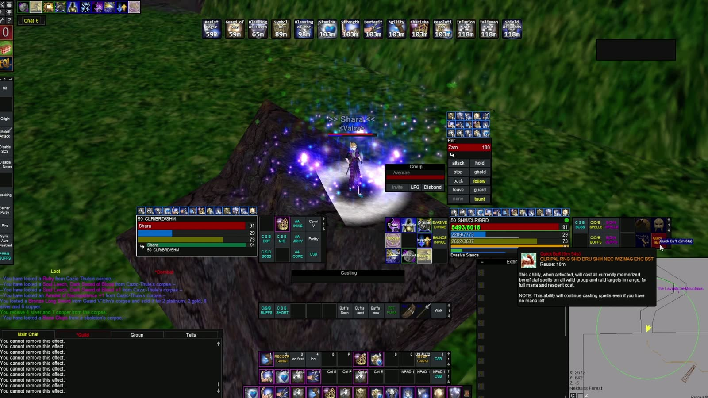

EQL Source / EQLS Auras
EQLS Auras
Stop alt-tabbing to check your buffs. EQLS Auras reads your EverQuest Legends log and shows a countdown overlay on top of the game.
Windows.
No download address is published here yet. This page will carry it as soon as there is one to carry.

EQLS Auras watches your log while you play and puts a click-through overlay on screen with a timer for every buff you’re running. Build as many overlays as you want, put them where you want, give them sounds. Point an aura at any line in your log, not just buffs the app knows. It hides when you tab out of EQ and comes back when you tab in. It tracks your weekly raid lockouts, which EQ never prints.
It reads files the client already has: the log it writes as you play, your spellbook, and the game’s own spell icons. It does not read or alter the game’s memory, inject code into it, or send it input. It fetches its typeface from Google each time it launches, which discloses your IP address to Google; beyond that it sends nothing — no telemetry, no analytics, no update check. That fetch is the main window only: the overlay drawn over the game requests nothing at all.
The idea is WeakAuras’. The code is not: a from-scratch implementation for EverQuest Legends, sharing no code and no trigger format with it, and neither affiliated with nor endorsed by its authors.